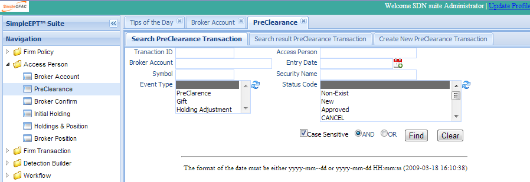
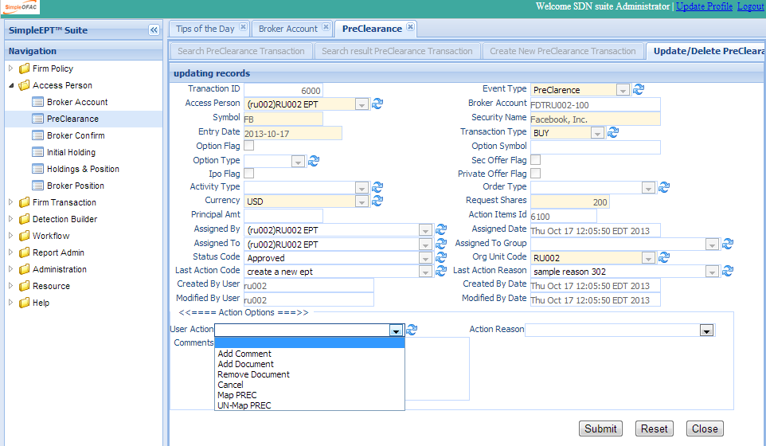
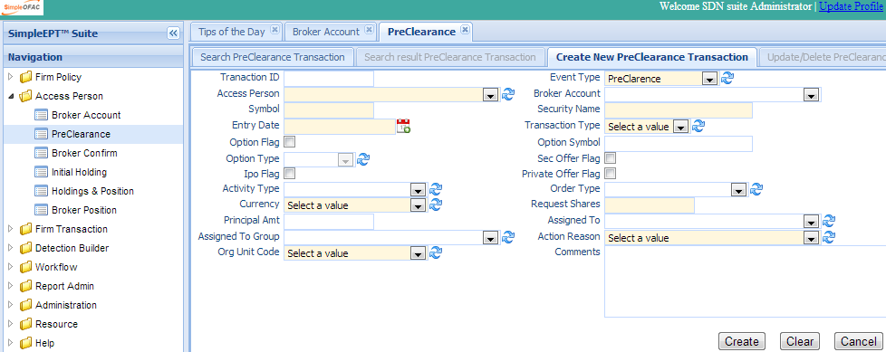

The PreClearance screen allows access persons or compliance officer to input preclearence requests, gifts, and holding adjustment transactions. Each transaction will validate against the firm rules and generate transaction status. Access persons or compliance officers also are able to check the validation status, add comments, and attached supporting documents. All of these are logged for audit.
Click the PreClearance in the left navigation menu under Access Person and a new PreClearance Tab folder will be created in the right panel. There are 3 sub-Tab folders: Search PreClearance, Search Result PreClearance and Create New PreClearance.
Search Criteria
| Field Name | Description |
|---|---|
| Tranaction ID | Transaction unique record identifier. |
| Access Person | The access person that request the transaction. |
| Broker Account | The broker account number. |
| Entry Date | The request date. |
| Symbol | The symbol of the security. |
| Security Name | The name of the security. |
| Event Type | Transaction event type; eg preclearnce, gift or holding adjustment. |
| Status Code | The status of this transaction; eg approved. denied, cancelled, etc. |
| Org Unit Code | The org unit this transaction belongs to. |
| AND | Select AND radio box if you want those criteria added together. |
| OR | Select OR radio box if you want to get the result if either of the criteria are met |
The top part is the table which shows the list of the PreClearance that meet the search criteria. The bottom part is the details, Rule Validation, Document, Email, and Action Logs of the selected entry.
Double Click the selected record in the table to modify this entry. A new tab folder “Update/Delete PreClearance” will be added, as shown below.
Select the “Create New PreClearance” Tab to create a new entry.
| Field Name | Description |
Tranaction ID Transaction unique record identifier. Event Type Transaction event type; eg preclearnce, gift, or holding adjustment. Access Person The access person that request the transaction. Broker Account The broker account number. Symbol The Symbol of the security. Security Name The name of the security. Entry Date The request date. Transaction Type The Transaction Type:bBuy or sell Option Flag Check if it is an option, the option symbol and option type are disabled when option flag is unchecked. Option Symbol The option security symbol. Option Type The type of the option, PUT or CALL. Sec Offer Flag Check if it is secondary offer. Ipo Flag Check if it is IPO. Private Offer Check if it a private offer. Activity Type Type of activity; it can be used in the rule builder. Order Type The trade order type. Currency Currency used in this transaction. Request Shares Number of shares. Principal Amt Principal amount. Assigned To Assign to person for approval, if needed. Email will be sent. Assigned ToGroup Assign to group for approval, if needed. eEmail will be sent. Action Reason Select a reason from the dropdown. Org Unit Code The org unit this transaction belongs to. ================ ========================================================================================================
Each new transaction will validate against the firm employee trade rules and generate transaction status. Please see Detection Builder section for details.